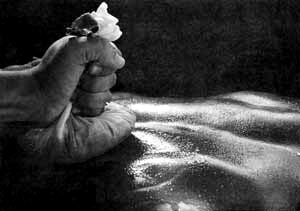
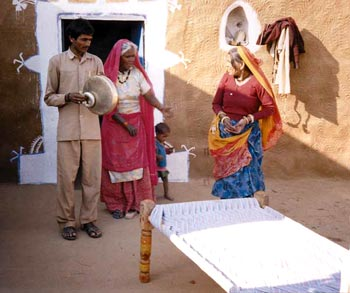
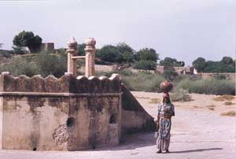

Postpartum - The Closing Body
Taken from a charpoy leg, this rare image of Bemata is shown with a swastik or satiya, which represents the auspicious nature of birth.
Food, Drink, Herbs and Locally Available Resources
These days
Dais use a new blade to cut the cord, earlier they used an iron knife heated over fine.” –Bihar
“Some examples of hot food and drink are a fine paste of garlic, curry leaves and mustard seeds with rice (Andhra Pradesh), a spoonful of
ajwain daily helps food digestion or milk with
ghee,
ahwain and jaggery." –Delhi
“Sweet pudding (
Gur ka seera, dalia) is given after childbirth. If she desires, roti is given.” –Rajasthan
“We give food after birth as this gives energy to the new mother, she will have milk for the baby and will also not have stomach ache.” –Manohari, Rajasthan
“Sweet pudding is the first thing given to eat. Then warm drink of milk and ghee. Woman is given sweet balls made out of edible gum (
gondh ki laddu). Spces or chilli are not given, nor is she allowed to have cold food." – Manori, Rajasthan
“We make the baby lick the blood of placenta. This keeps the baby from respiratory problem." –Mohini, Rajasthan
“Some women get the desired to eat mud after delivery. This urge may be because of lack of blood. We advised them to have roasted black gram, lentils or nuts.” – Punjab
“For the forty days, we tell the new mother to drink warm water.” –Punjab
“After delivery a woman is not given any grain or heavy food. This is called
narak fasting (
Narak
Upwas or fasting during the time of
Narak). Grain is only given on the third day after all the dirty blood comes out. On the first day, she eats biscuits with tea. She drinks warm water. Second day, heat-producing balls mage out of ginger, pepper, turmeric, roasted rice, milk, jaggery (
saunth balls). Third day, rice, lentil soup and vegetables are given. Rice is not given immediately after birth. First, we massage her. This relaxes her muscles, only after this she can digest her food. Turmeric lessens pain, dries the
shareer and the
saunth helps in forming milk.” –Pairia Devi, Bihar
“We give warm fomentation to woman’s vagina. Also warm pieces of brick are kept in an earthen pot and placed on her belly. By this the bad blood melts and comes out.” –Rani, Delhi
“When a
jachcha gets
gola pain (postpartum pain, the involution of the uterus) a coconut is broken near the head of the
jachcha’s bed. A few pieces are given to jachcha to eat and the rest is distributed.” –Praveen, Delhi
“The Dai massages the new mother for six days, foments her belly with arandi leaves and tie her waist with cloth. She feeds the woman and gives her hot brew of ajwain.” –Bihar
“A paste of turmeric,
ajwain and neem leaves is used to massage her. Her shareer is fumigated with Onion bhusi, garlic bhusi, loban and hair, these four are burnt. She squats over this. This helps in healing her
shareer and helps get rid of the bad blood.” -Dhapo, Delhi
“The roots of wild berries bush (
baer) is pounded and boiled.
Jachcha is made to sit in water. This helps contracting and cleaning the womb.” –Dhapo, Delhi
“Before we used to make the women lie on sand (
dhool-
mitti) to deliver. If the woman felt cold, then I used to heat up the sand. Now, we are given plastic sheets by Urmul. So we spread these sheets during birth.” –Manohari, Rajasthan
Skills and Knowledge
“If the baby is doing fine then we clean baby’s mouth with cotton or cloth and place next to mother. By this mother and child feel secure and warm.” –Punjab
 “The Dai massages
jachcha from stomach to pelvic area, to facilitate placenta delivery.” –Delhi
“She may put a hair in
jachcha’s mouth to make her gag. This reflex action expels the placenta. Or an ash drink may be given to her.” –Delhi
“To expel the placenta, the Dai massages the belly, and may get the woman to gag putting the new mother’s hair in her mouth.” –Bihar
“There are also ways to help placenta to come out. We press the belly and massage it in circles. This it comes out.” –Tara, Delhi
“After birth, if the placenta doesn’t come straight out in the passage, it gets stuck in the empty womb and takes time comes. Then we make the women cough.” –Guddi, Rajasthan
“After birth of the baby, the
Dai presses the stomach from above. This prevents the placenta from moving up.” –Bihar
“We cut the chord only after the placenta is delivered and after the baby has cried. If cord is cut before placenta is out, it is dangerous because the placenta may go up.” –Bihar
“Placenta is poisonous for the woman if it stays in her body. If it goes up in the belly the woman can die.” –Punjab
“I consider cutting the cord a sin equal to killing of a 100 cows. I have delivered many babies but have cut only 12 cords – of my own 12 children. I always make the jachcha cut her own cord.” -Dhapo, Delhi
“It is my job to cut the cord. However, I do not cut cord of babies whoa re related to me. They are my own blood. The cords of these babies are like my roots, so how can I cut my own root? I handle their births but someone else cuts the cord.” –Satwant Kaur, Punjab
“When a Dai cuts the cord, she offers something to the Gods.” –Delhi
“Placenta-cord is buried in the house and fire is lit near it to ward off evil spirits (
bhoot-pret).” –Rani, delhi
“We never throw the placenta away. The child is so dear to us is the placenta dear to us. For nine months it has nurtured and protected the baby so how can we throw it? –kamala, Delhi
“The woman who does not have children is made to touch the placenta, this helps her to have a baby.” –Praveen, Delhi
“After the placenta-cord is out, the vaginal area is pressed with the heel. By this energy channels that gets pulled (
charhi hui nasein) settle down.” -Naseem, Delhi
“Dai cleans mouth throat of baby, and then using her finger dipped n oil cleans the anal passages.” –Delhi
“After birth, we bathe the baby with warm water prepared by boiling fenugreek seeds. Ajwain is burnt in their room. The smoke is considered to be disinfectant.” –Punjab
“The womb cannot settle immediately. Slowly it contracts and after 40 days it closes completely.” -Rani, Rajasthan
“Her pelvic area is pushed firmly, using the heel of the foot. This is done for sometime everyday for the next few days, following birth.” –Delhi
“We make the women stand and the press the jachcha’s belly with our head to help expel blood. This is black blood. This way the nine months pooled blood (
nau mahine ka narak) is expelled. This flattens her belly. Otherwise, the belly looks swollen as if there is baby inside. Bleeding also continues for month or months and half. If the black blood is expelled then bleeding stops in three-four days.” –Kheevni, Rajasthan
It is called dirty blood because it has collected over nine months in the body. It is dark, smelly and clotted. It comes out first and then fresh clean blood comes out. With a little pressure and massage and press the stomach to place the stomach back into position.” –Punjab
“For 5 days we go to
jachcha’s house everyday. Massage her head with ghee and pepper. Her head stays cool. Massage her body with oil and give warm antiseptic herbal bath (boil
raangh ki jar, roots of wild bush). This cleans her and keeps her from falling ill.” -Rajasthan
“The mother is cleaned up, her blood stained cloth changed, her hands and face washed. Her belly is given hot fomentation by placing earthen pot on a leaf. Her back is pressed gently with feet. Then she is asked to sleep.” –Bihar
“The baby is bathed and wiped, dressed and may be placed next to the mother at this point. The baby may be given lick of honey or jaggery, or may be placed at the breast immediately. Dais are from various communities (Rajasthan, Punjab, Uttar Pradesh, Bihar, Andhra Pradesh), and so are their clients. Often the Dai is from the same community, but not always. If she is from a different community, she is sensitive to their customs and respects their practices regarding breast-feeding.” –Delhi
“Both mother and baby are massaged. In most places, the stomach is massaged gently with the purpose of helping the uterus come back into its original shape and place, and aid removal of blood from the womb. The naval is pressed to help settle the uterus. The legs may be massaged forcefully, because the woman’s legs tend to become weak after childbirth.” –Delhi
“We take
ghee or mustard oil and massage legs, knee and feet. We massage in upward direction, from feet to the thighs. We massage the head with warm oil. She should not catch cold. Massage helps in the circulation of blood. One should wait for 1-2 hours before having a bath.” –Punjab
“We massage only the head because if there is tension in the head, there is tension in the whole body. If there is peace in the head, there is peace in the whole body. If the head is cool the whole body is cool.” –Delhi
“If the birth takes long then the baby’s head becomes long, it gets exposed to air. Wee massage the head of the baby and set the bones. During this time the head is soft and gently.” –Punjab
“Massage makes the body light and relieves fatigue. Without massage, the woman cannot become active. It helps firm up the muscles.” –Punjab
“If she has itching in her vagina (
shareer) we give fumigation of vagina. We burn some of her hair and herb (
bhojpath). This stops the itching.” –Manori, Rajasthan
“The
shareer is
kachcha at this time. First we massage the head and once it cools down then the bode relaxes. Afterwards the whole body is massaged. This is done from the fourth day when the bleeding lessens.” –Kheevni, Rajasthan
“her shareer is cleaned with warm herbal water (
raangh ki jar). This prevents infection. It is done for three-four days."-Kheevni, Rajasthan
“This is a gola of thick, coagulated blood (jamma hua khoon). It bleeds out in three days and then abdomen feels better.” Guddi, Rajasthan
“
Gola is the protector of the baby. When the baby comes out it looks around for the baby. Therefore there is pain. When it doesn’t find the baby it settles down on its own.” –Praveen, Delhi
“
Gola is baby’s home. When the house becomes empty, only dirty blood is left. When this comes out there is pain. Hot brew (
ajwain,
aunth,
papal and
gur) is given. This drink cleans the belly. After the baby is born. The gola roams around. This gola has taken care of the baby, now must leave. If the pain in intense then warm fomentation is done and gola melts away. This is dirty blood and needs cleaning up.” –Kamala, Delhi
“When the
gola moves the pains are excruciating as if the life force is ebbing away (pran nikal jata hai). The place from where it moves is pressed. Then it stays on the lower part of the abdomen.” –Dhapo, Delhi
“We tie the belly and press the
gola. This is more difficult then handling a delivery. If there is lot of pain then hot fomentation of gola is done. We place a warm metal pot containing pieces of warm bricks on the abdomen.” –Rajasthan
“After the baby is delivered I move the belly of the woman in circles a lot. When it is set the gola comes out. It is to be done very skillfully.” –Tara, delhi
“If wind/air (
hawa) goes inside then it makes lot of funny sounds. Therefore no air should be allowed to go inside the body. For then days massage is done for the jachcha thn no air will go in her body and she will not have joint pains.” –Kamala
“After birth the
Dai makes the jachcha cross her legs, one leg is put on the other. This is to prevent air from entering her body.” –Rajasthan
“The jachcha is told to cross her legs. For at least tow days, she should keep her legs crossed most of the time. She should not get up and walk about, as wind would then form inside her body.” Delhi
“If the information is done with ajwain pouches the air does not effect the woman. Her shareer does not itch.” –Tara, Delhi
“With a wet mixture of flour, turmeric powder, ghee, the new mother is massaged. The baby is bathed with warm water. We make her sit ina tub of herbal antiseptic water prepared by boiling raangh ki jhar. This is done for 2-3 days. This heals and also helps in closing of the shareer.” –Kesari, Rajasthan
“Sometimes the cord is crushed and given to drink to a woman who is not able to conceive. Then her womb starts functioning.” –Rukma, Rajasthan
Emotional and Social Support
“We do not tell the
jachcha the sex of the child till the placenta is delivered. If the woman has had few girls children and is wanting a boy child, she may go in shock hearing that she has given birth to a girl child.” –Prema, Rajasthan
“We do not tell the woman the sex of the child, she can get a shock. This may cause the placenta to go up and cause death. We try to remain calm and also keep the woman calm. This may happen even when she gets excited on having a boy child. We do not even tell the family members about it. It is only after the placenta is out and cord is cut that we inform the new mother and the family members.” –Kako, Punjab
“Some jachcha die if they keep on having girl babies. It happened with me. One woman had a third girl baby. Her younger sister-in-law said,’O, dear! A girl baby is born’. I told her to keep quite or else something bad could happen with the mother. After a while she satarted bleeding heavily, quickly she was taken to the hospital. She died there. I was so upset that for many days I could not go for deliveries. For two years, I did not talk to that family. I could have also got a bad name. many times we also lie that she has got a boy baby.” –Vidya Devi, Delhi
“We understand the apin of another woman’s body, adhnar pain (
gola referred as adhnar in Bihar) by our own experience of what happens in our own body. In me, too, adhnar roamed around, I had pains therefore I can understand what happens in anotehr’s body. We call the blood clots which come out when we press her belly ‘
Gangi-jamni’. After it comes out the body feels better and pain becomes less.” –Jetli, Bihar
“Till jachcha has a bath, the baby is not named nor is any prayer or rituals done. The jachcha is considered unclean (
chhutak). On the fortieth day, the earthen pots are changed, the new mother is bathed and her room is cleaned. Till now only
Dai was touching het and taking care. Nobody from the house was touching her. The
Dai massages the new mother and the new baby. There is a tradition to use wheat grain flour, ghee and turmeric for massage. This softens jachcha’s skin and her skin glows like that of new bride.” –Kheevni, Rajasthan
“A woman should rest for several days after delivery. However, this depends on her condition and the requitements of her household. She needs to rest, as her body is closing up gradually.” –Bihar
“A woman should rest for at least forty days. Her shareer is raw, so she resumes work gradually.” –Rukma, Rajasthan
“A
Dai advises the mother to rest as much as she can.” –Delhi
“If a woman does heavy work after delivery her uterus may come out. She should rest till her shareer closes. People blame us whaen this happens although it is really lack of rest. Then they ask us to set the uterus right!” –Saubatia, Bihar
“After birth, asafoetida (
hing) is put in apiece of cloth and tied on jachcha’s cot. Matchstick, water and sickle are kept under the bed. This is to protect the mother from fearful thoughts and feelings.” –Punjab
Rituals and Body Imagery
“After the birth we clean up, bathe the jachcha, beat the thaali to announce the birth to others and go home.” – Rajasthan
“The placenta-cord is buried. We also bury rice, sweets, turmeric and money along with it. We pray to Mother Earth to receive the dirty stuff.” –Punjab
“The placenta-cord is buried in the house and fire is lit near it-to ward off malevolent spirits and ghosts.” –Rani, Bihar
“We take lot of care while burying in the house the placenta. Along with the placenta we bury red powder (
kumkum) money, grain, jaggery and a ring. We bury it in a side down position the baby will vomit. The baby can fall ill. However, the placenta cord must be kept very safely.” –Kesari Rajasthan
“After birth, baby is put to the brest. The first milk is given under the coolness of the srtars. A ring is put on the nipple and milk is taken out in a plate. The younger-sister-in-law (
nanad) cleans the breast and then the baby is given to sickle. Sister-in-law is given the ritual gift or money.” Kesari, Rajasthan
“It used to be that the younger sister-in-law would clean the breast with grass. After that the baby would be put to the breast. These days we ourselves clean it.” –Tara, Delhi
“The baby was given first milk under the coolness of the stars. Eight drops of milk were given initially. If the birth takes place in the morning then the milk is given in the evening after the stars come out.” –Manohari, Rajasthan
“The Dai goes to her own home soon after the delivery. She comes regularly every day for the next few days. She takes care of the mother and child foe about 6 days. Then, birth a new baby is celebrated (
chhati). On this day the Narak time ends. The bleeding of the new mother and the child is removed and the
Dai cleans the room wher the birth took place. The dirty clothes of the mother and baby are also cleaned. After this soap and oil is given to Dai, she takes a bath. The Dai is given a ritual gift or money (
neg). the relatives of new mother and father meet (
samdhi
Milan). The house is cleaned and decorated, mother and baby wear new clothes. She puts on her marks of beauty (
applies sindor and khol).” –Bihar
“On the 13th day after birth, the new mother is allowed to enter the kitechen. (
chauka
charhana) Some do it on 7th or 11th day. Everybody celebrates. There is singing and dancing. On this day the new mother and the baby bathe and wear new clothes. She comes out to get everyone’s blessing. Friends and relatives are invited and eat food together. The
Dai is given clothes, food and grain.” –Punjab
“On the day of the birth ritual celebration (
chhati-6th day) the woman wears everything that was taken off at the home of the birth. She put on bindi, bangles, henna and nose ring. We make rirual drawings of Swastik, worship Bemata and light a lamp. We make a foot impression of the mother on the floor and then the women enters the main house. Till the 5th day Bemata roams around in the house. The Dai also goes to serve others.” –Paana, Rajasthan
“After 40 days, the mother and baby go to do well worship (
kuan
puja). She dresses up like a bride. She pays respect by bowing her head to the water source, lighting a lamp, and offering cow dung paddies and sweets. After this they go to
Kwaja Pir (aplace dedicated to Muslim holy man), offer rice, cow-dung cakes, and light a lamp there. Sometimes the cow-dung cake is in the shape of baby and a piece of cloth is tied around the child.” –Punjab
“We also thank
Bemata for blessing us with the baby and pay obeisance to Mother Earth, she is Supereme.” -Punjab